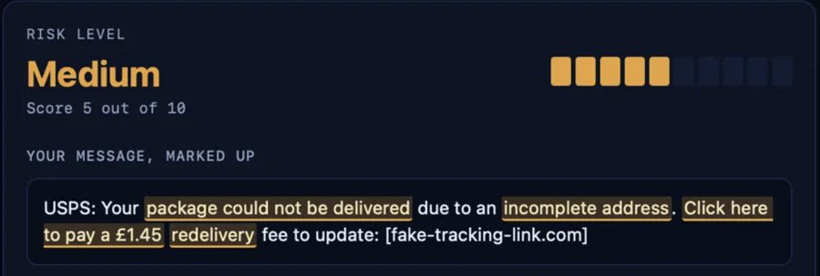

scam-checker
repo

Scam Checker
A Java server reads a message and flags scam warning signs by fixed rules: pressure to act fast, gift card payments, fake delivery notices and lookalike links. A TypeScript page highlights each flagged phrase and explains why.
32 tests pass · rules only, no AI
The live page is a visual demo. The scanner runs when you start the Java server yourself.